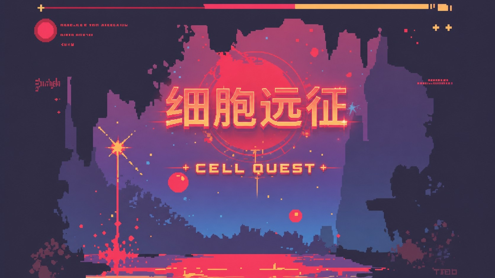
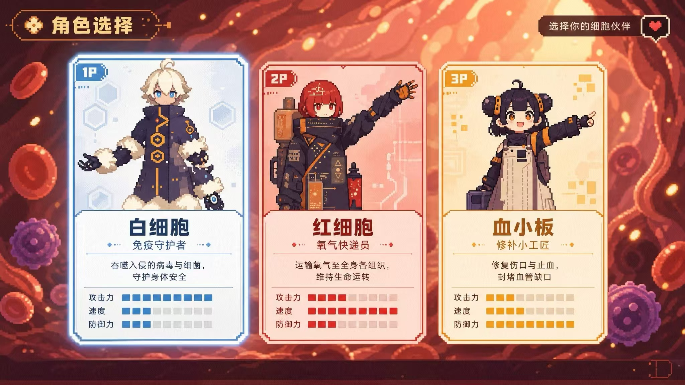

细胞远征 是一款以人体免疫系统为题材的 HTML5 2D 横版平台跳跃游戏。
玩家可自由切换 白细胞、血小板、红细胞 三种免疫细胞， 每种细胞拥有基于真实生理功能设计的独特能力。
游戏模拟了人体擦伤感染的完整病理过程——出血期、创面缺口、炎症潮汐、愈合衰减， 让玩家在闯关中亲历一次免疫应答的微观之旅。

免疫系统的 战士
🦶 踩踏消灭细菌
🗡️ E 键挥剑近战斩杀
💨 Shift 高速突进穿透敌人
唯一能对 Boss 造成伤害的细胞
血管的 修理工
🧱 E 键消耗能量生成凝血平台
🛑 止血暂停炎症潮汐 2 秒
🔗 填补地形缺口，解锁新路径
搭桥是通关缺口地形的唯一手段
氧气的 搬运工
🌬️ 氧气压制领域（被动触发）
📉 潮汐效果减半 · 抑菌 · 消退脓液
🍎 唯一能收集营养包的细胞
移动速度最快，适合速通挑战

三种细胞的能力并非孤立存在，而是形成紧密的战术联动：
氧气联动：红细胞领域激活后 → 血小板搭桥能耗 减半、持续时间 翻倍
踩踏联动：临时平台上踩踏 → 触发 AoE 范围清怪 buff → 氧气领域再附 +1 踩踏伤害
适合 中小学科学课堂、医学科普展馆 等场景，寓教于乐
扫码或点击链接，在浏览器中直接体验
操作提示：1/2/3 切换细胞 · ← → 移动 · 空格 跳跃 · E 技能 · Shift 突进